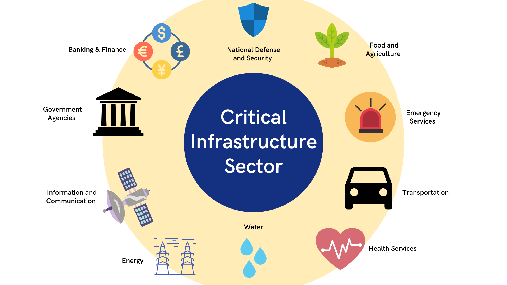

Critical infrastructure secuirty is the system that protects highly important systems like national security, economic health, and public safety. It can range from being a computer system, application, network, or data and digital assets to protect information. In the United States there are two departments that help with the spreading of these systems: the NIST and the CISA.
Malware is short for "malicious software." Malware can include anything that indends to harm a computer system or its users. Malware can be a program or a software code that is purposefully made to attack someones device. Almost every cyberattack to this day includes some form of malware into the attack.